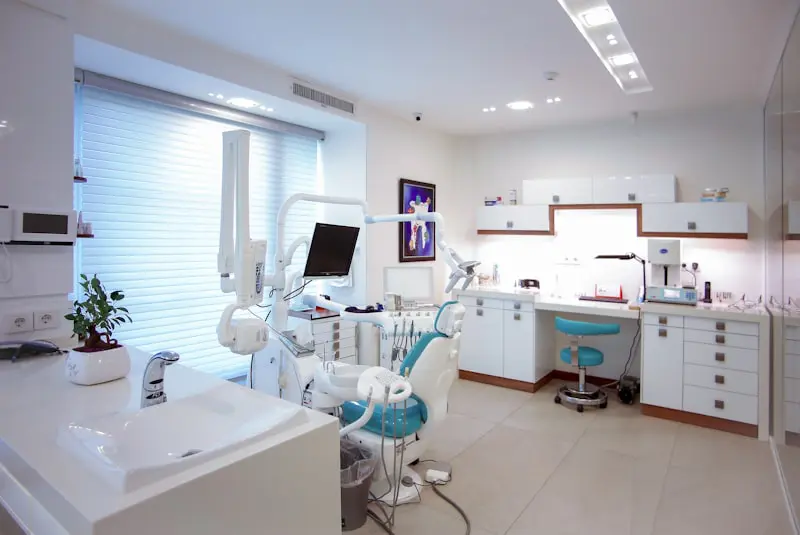

Stackly Home
Streamline patient care with our all-in-one digital healthcare platform. Unify Outpatient (OPD), Inpatient (IPD), EMR, Smart OT, Laboratory Information (LIMS), and Pharmacy into one connected, compliant ecosystem.
Active Healthcare Centers
Electronic Health Records
Mission-Critical SLA Uptime
From single doctor clinics to multi-city tertiary care hospital chains, Stackly Health digitizes every clinical and administrative touchpoint.
Designed with clinical precision to eliminate paperwork, avoid medical errors, and deliver frictionless patient journeys.

Token management system with digital queue boards, multi-specialty triage, patient registration, and instant digital vitals capture.

Visual ward layout with real-time occupancy status, nurse charts, medication administration records (MAR), and discharge summaries.

Comprehensive clinical charts with ICD-10 coding, customizable specialty templates, drug allergy alerts, and past medical timelines.
Scheduling surgical slots, surgeon/anesthetist rostering, PAC clearance checks, surgical instrument tracking, and post-op recovery notes.
Automate bidirectional communication with over 200+ hematology, biochemistry, and immunoassay lab analyzer machines.
Multi-store hospital inventory with centralized purchase orders, minimum threshold alerts, batch expiration tracking, and barcode POS.

HD WebRTC video consultations with screen sharing, digital prescription issuing, and online payment gateway integration.

Accelerate insurance pre-authorizations, co-pay split billing, TPA settlement tracking, and automated audit trails.
Executive dashboards for Medical Directors and CFOs with real-time revenue stats, doctor clinical revenue, and NABH indicators.
Experience how doctors, nurses, lab technicians, and administrators use Stackly's intuitive UI.
Manage critical admissions, ICU transfers, oxygen point allocations, and housekeeping sanitization turnovers in one unified live floor plan.

Eliminate manual data entry errors. Stackly interfaces directly with Beckman Coulter, Roche, Abbott, and Sysmex lab equipment via RS-232 / TCP-IP protocols.

Built by doctors for doctors. Finish consultation documentation in under 60 seconds with voice dictation, smart medication dosage auto-calculators, and pre-built specialty templates.

Eliminate stockouts and medicine expiration losses with automated purchase triggers, FIFO inventory management, and superfast barcode billing.

Verified statistical outcomes achieved across 2,800+ healthcare facilities within 90 days of deploying Stackly Health.
Experience how data effortlessly flows across every department without duplicate entries or clinical communication gaps.
Online booking, self-service kiosk, or front desk registration with instant digital token generation.
Physician accesses longitudinal medical history, enters symptoms, and issues digital e-Prescriptions.
Sample barcode scanning, bi-directional analyzer testing, and instant pathologist digital approval.

Automatic prescription push to dispensary, barcode batch validation, and fast contactless billing.
Automated summary generation, digital bill settlement via TPA/UPI, and automated follow-up scheduling.
We uphold the highest global healthcare privacy standards to safeguard sensitive protected health information (PHI).

Pre-configured clinical audit quality indicators, incident reporting, and mandatory NABH documentation checklists.
Comprehensive administrative, physical, and technical safeguards protecting patient data confidentiality.
Seamlessly integrated with Ayushman Bharat Digital Mission (ABDM) Milestone 1, 2, and 3 with FHIR interoperability.
All medical data is encrypted in-transit (TLS 1.3) and at-rest with automated geo-redundant hourly backups.
Discover how top hospitals streamlined care, elevated patient satisfaction, and scaled operations with Stackly Health.
"Switching from our slow legacy on-premise system to Stackly was the single best operational decision we made. Our OPD waiting times dropped by 45%, and the automated lab analyzer integration eliminated transcription errors completely."
"Stackly's doctor-first EMR is phenomenal. Our physicians can document complex surgeries and patient notes in under two minutes. The e-prescription sync directly with our central pharmacy has made dispensing seamless."
"Managing 14 diagnostic center branches was a logistics nightmare before Stackly LIMS. Now our pathologists review and digitally sign reports from anywhere, and patients receive their results on WhatsApp within minutes."
See why hundreds of institutions are replacing outdated desktop server software with Stackly Cloud Health ERP.
| Feature Capability | Stackly Health Cloud ERP | Legacy Desktop HMS | Basic Medical Software |
|---|---|---|---|
| Deployment Architecture | 100% Cloud Native SaaS (Zero Server Maintenance) | Bulky On-Premise Local Server | Single Computer Standalone |
| Bi-directional Lab Analyzer Sync | Automated (200+ Machines Interfaced) | Manual data entry | Not Supported |
| Multi-Branch Central Consolidation | Unified Dashboard Across All Hospitals & Labs | Isolated data silos per branch | Not Available |
| WhatsApp & Digital Patient Locker | Automated instant PDF & Appointment Links | Paper printouts only | Basic SMS only |
| Accreditation Ready (NABH / ABDM / HIPAA) | Built-in automated audit tracking & KPI reports | Manual registers & spreadsheets | Not Compliant |
| System Updates & Data Backups | Weekly continuous zero-downtime updates | Painful manual upgrades | Vulnerable to ransomware |

Join thousands of visionary healthcare administrators and medical directors. Request a personalized live walkthrough tailored to your hospital's specialty and bed count.